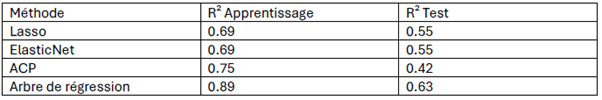
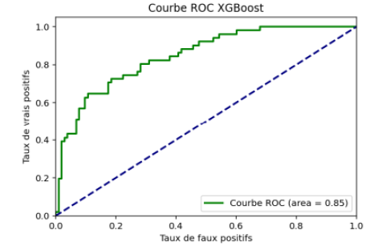

Carrying out a datamining process
The goal of this project was to try and discover new statistical models used for regression and classification problems. We started with a regression tree. Unlike decision trees, where each end node assign a class to an observation, regression trees build their predictions by averaging observations together. During training, the tree makes its predictions by grouping observations that share similar features.
This model was tested in Python. The data we used was cleaned and split into a training and a test dataset. The model was then tuned by adjusting its hyperparameters, such as the maximum depth of the tree or the number of variables selected. This approach was compared with several other models (Lasso regression, ElasticNet regression, and PCA-based regression) to verify the precision and quality of the predictions. In the end, the regression tree gave the bests results, with a R² of 63%, compared to a maximum of 42% for the other models.
The other statistical tool we discovered was used to solve classification problems: the XGBoost algorithm. It use the gradient boosting strategy, which combines several classification models to build one strong model. This time, it was used for binary classification. Like the previous model, the parameters were tuned, we got stable results, which shows the model was good at classification. The accuracy reached 81% for XGBoost, compared to a maximum of 78% for the other models (KNN, decision tree).
Both methods had the advantage of not being sensitive to missing data, either by estimating it automatically or just by handling incomplete observations on their own. Also, comparing them with other models showed they were less likely to overfit. This project ended with a report explaining how these methods work and the steps we followed to learn how to use them.
Skills gained:
- Knowledge of the Python language
- Using regression trees and gradient boosting
- Understanding how to prepare data to train a model
- Writing a report
- Using perfomance metrics and choosing a model
- Following a modeling process
Illustrations

Diagram of the Regression Tree

Comparison of the differents methods with the coefficient of determination, on the training and validation data

ROC curve for the results of the XGBoost algorithm